RICVs de Berck

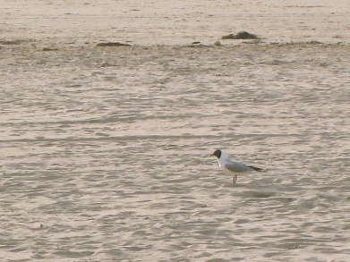
Berck, les Rencontres Internationales de Cerf-volant. Cette année, Championnat du monde de deux-lignes en team. Mais le monofil garde son importance, comme les JdVs. Et aussi les mouettes sur la plage qui reviennent dès qu'on débarrasse leur terrain de nos bazars infernaux...

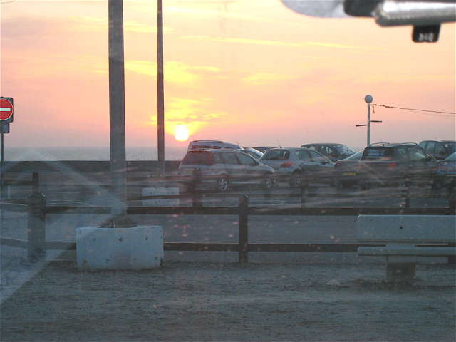
J'arrive vendredi soir, comme d'hab, ciel bleu, mais pas mal de nuages à l'horizon, soleil rouge = pas très bon signe météo !

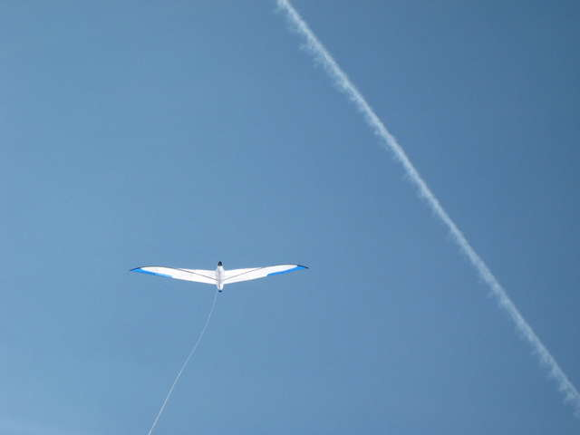
Eh bien finalement, il fait plutôt beau en ce samedi matin (d'accord, ça ne va pas durer...) ! Mon Albatros à la toile toute neuve éclate dans le ciel bleu, je ne regrette pas le boulot, après un moment délicat de mise au point (je n'ai pas eu le temps de voler avant...).

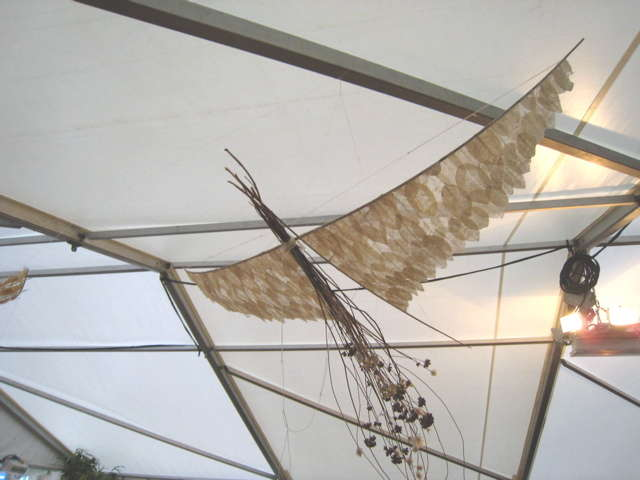
Sur la promenade, un tas de marchands et d'expos. Mme Comalonga expose de très beaux oiseaux de feuilles et de bouquets séchés, elle fait même le papier composite elle-même !

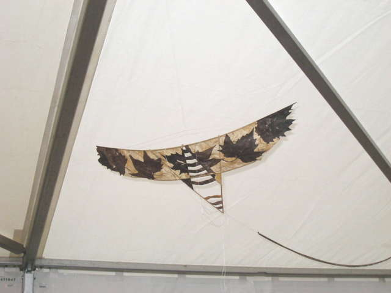
La matière est splendide, j'y suis très sensible, et les formes ne sont pas mal non plus.

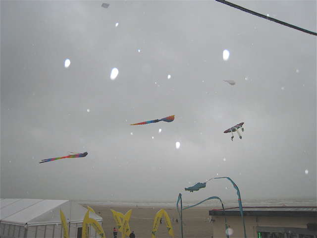
Las, il commence à neiger ! Peter Lynn ne mollit pas et honore son contrat, il sera en l'air tous les jours volables de 9 h à 18 h, pas comme d'autres !

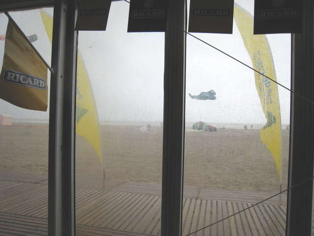
Le déjeuner sauve la mise, on se réfugie dans le barnum, rigide, cette année, avec de grandes baies continues donnant sur la plage...

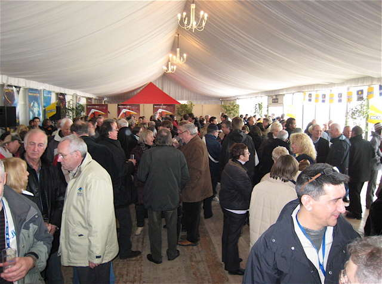
Et un petit pot municipal d'inauguration, avec musique, discours et apéritifs qui permettent de se retrouver entre amis ou d'en rencontrer de nouveaux.

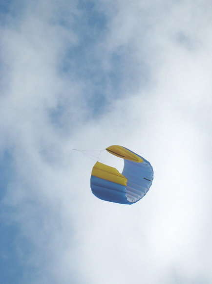
Peter Lynn fait voler ses voiles de traction gréées en monofil. Cette année, il les porte très fermées, je les aimais mieux plus ouvertes, en voûte...

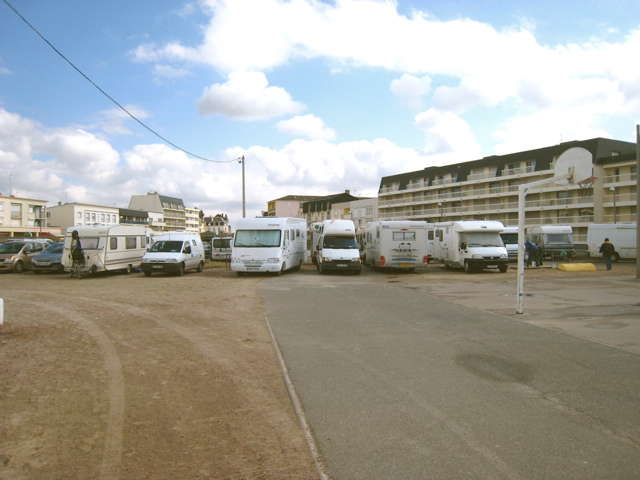
Ca se dégage un peu, pendant que le parking réservé aux cervolistes se meuble petit-à-petit de camping-cars de toutes les tailles...

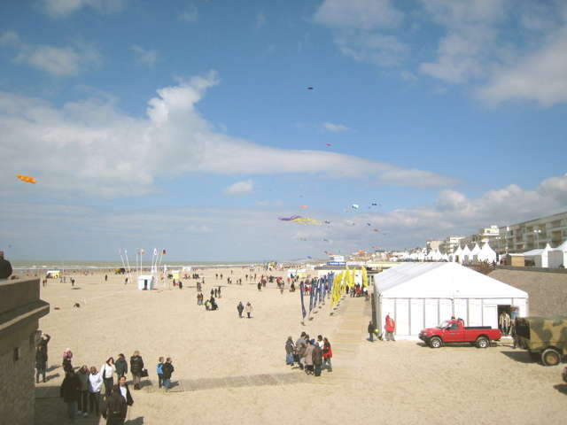
La disposition générale est la même que d'habitude, le terrain de présentation au milieu, à gauche les gros monofils, à droite les autres, puis les JdVs, et le barnum (pardon, la tente VIPs) dans le renfoncement...

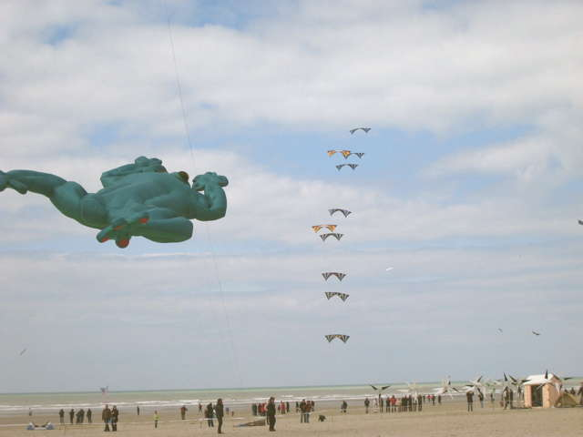
Les révos commencent à se rassembler, surveillés par une monstrueuse grenouille aux muscles impressionnants...

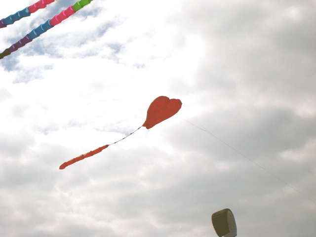
Dans les gros, ce cerf-volant en forme de coeur séduit beaucoup !

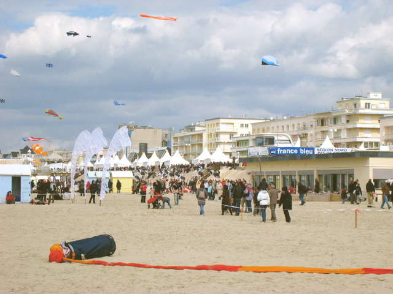
Le public arrive nombreux, malgré des passages nuageux plus ou moins violents...

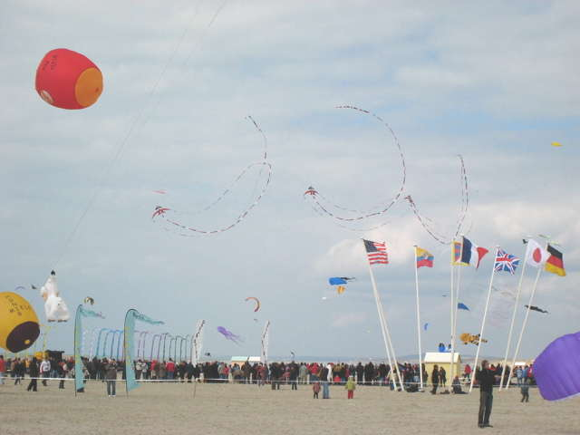
Ray Betell, indéracinable, fera toujours avec brio son numéro habituel : piloter simultanément 3 cerfs-volants...

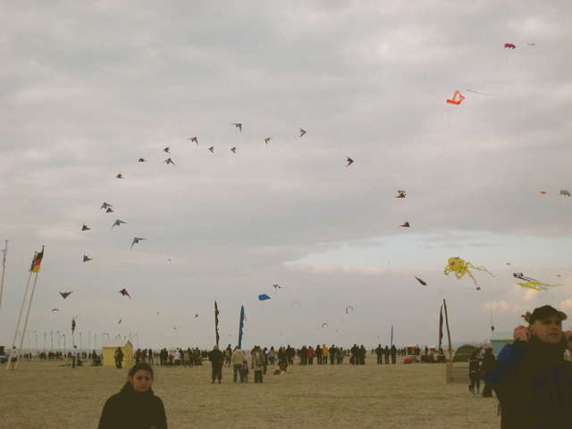
Tous les jours, mégateam pour 2-lignes d'ouverture et de fin d'après-midi...

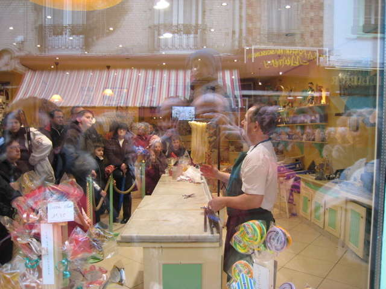
Au soir, restaurant, petite ballade dans les rues. Un confiseur, grâce à un crochet, transforme sous les yeux des badeaux du caramel fondu en berlingots et en sucettes...

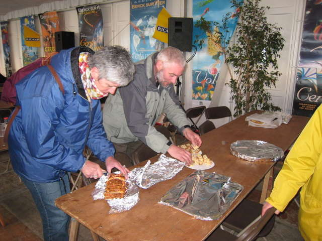
Ce soir, repas sous la tente, on va commander des pizzas (les jardiniers n'ont pas eu droit cette année aux tickets-restau du soir)...

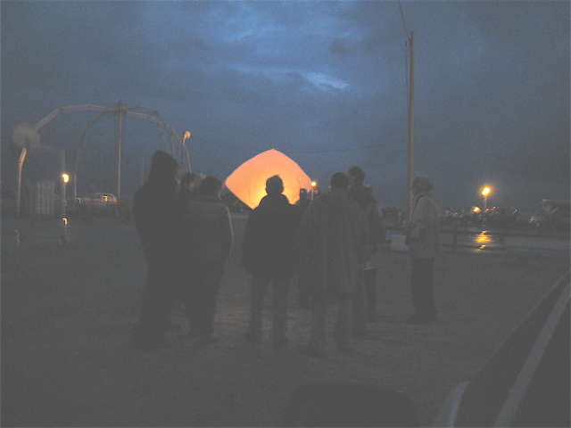
Après dîner, peu de vent, c'est le moment pour les montgolfières-papier ! Les spécialistes ont préparé leur lot, avec les outils soigneusement construits, comme les presses à mèches pour former celles-ci et exprimer l'excès de paraffine.

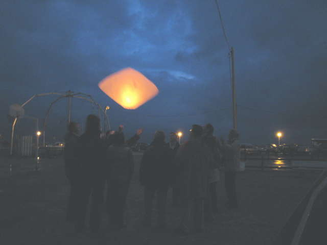
Et voilà, le miracle s'est encore renouvelé, ça vole !

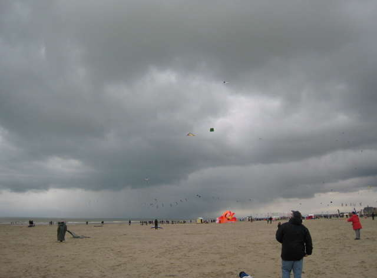
Au nord, un bon grain, bien noir dessous, mais qui nous évitera... Tout au long de la semaine, ce sera un coup à droite, un coup à gauche, mais dans l'ensemble, nous avons été chanceux !

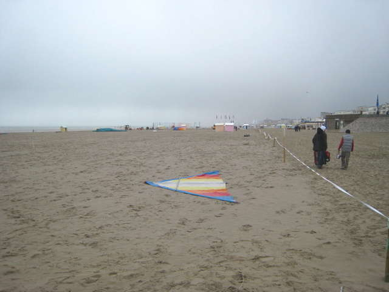
François (le Prés.) me prévient quand même, il tire de sa ligne des étincelles de 2 cm ! Nous descendons nos CVs en vitesse et allons nous mettre à l'abri !

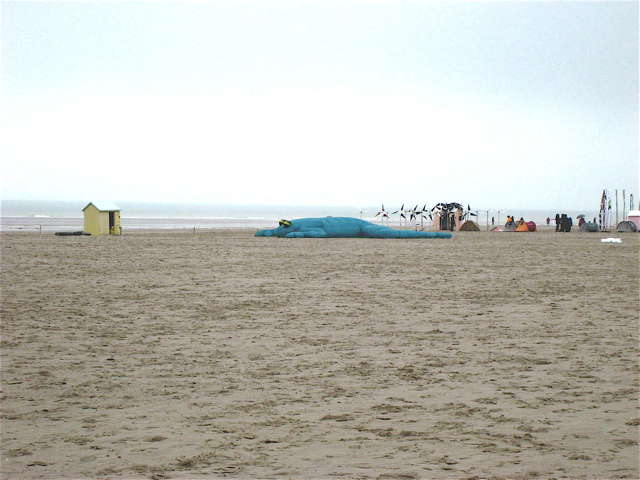
Ensuite, le vent tombe, la grenouille, malgré sa puissante musculature, s'est tristement affalée à bout de souffle !

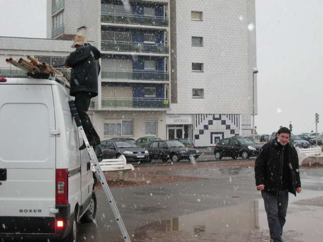
Dimanche soir, il commence à neiger, Bruno Tondellier range son bazar pour la nuit.

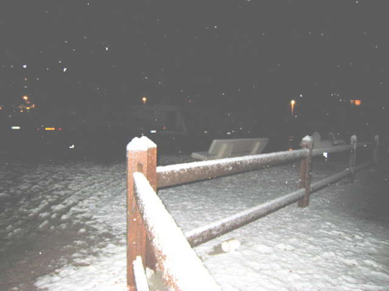
En sortant du restaurant, la neige a déjà recouvert les toits et les balustrades...

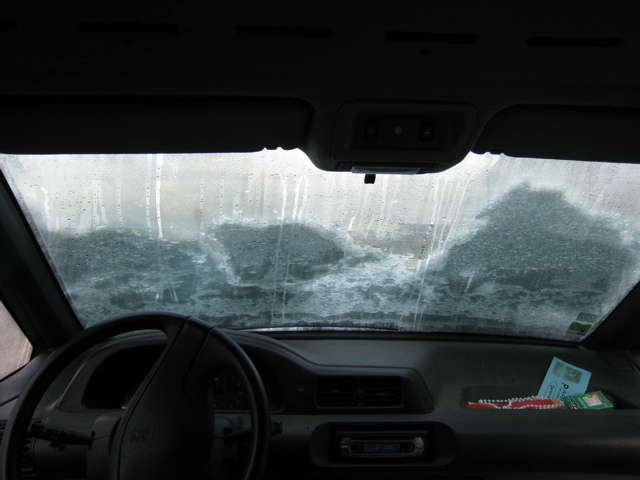
Au petit matin, j'ai l'impression d'être dans un igloo, mon pare-brise est couvert d'une épaisse couche de neige, qui fondouille, heureusement....

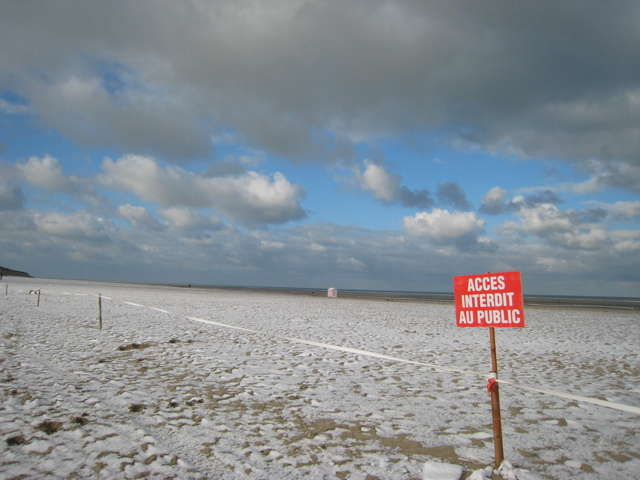
Les surfaces de vol sont toutes blanches, et il en restera toute la journée dans les creux et à l'ombre...

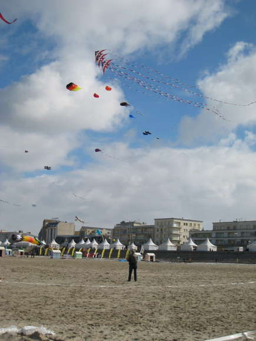
Mais rien n'arrête Ray Betell, qui place quelques refuelings bien nets...

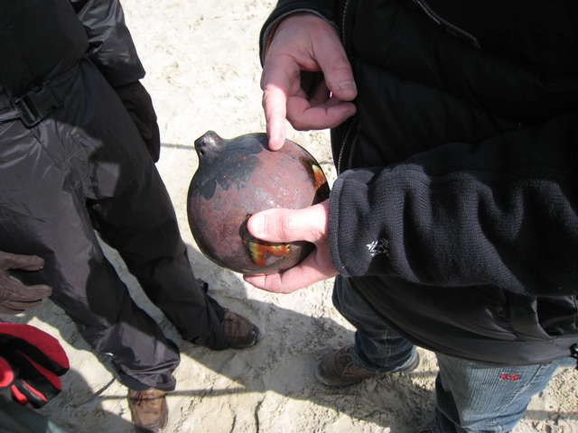
Aux JdVs, Didier a créé de très belles boules sonores en terre cuite émaillée, comprenant une anse d'accrochage, un trou pour le balai qui oriente la boule dans le vent, et la fente du sifflet... le tout formé en début de processus, bien sûr...

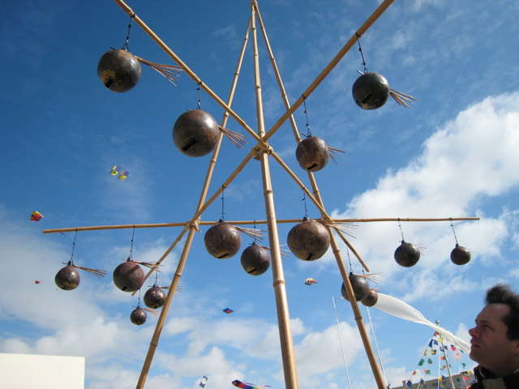
Ensuite, on passe des oxydes, on émaille en partie, et on finit par cuire. Si ça ne va pas, on casse et on jette... Sinon, il assemble le tout en un arbre musical, le vent n'a pas manqué pour les faire sonner !

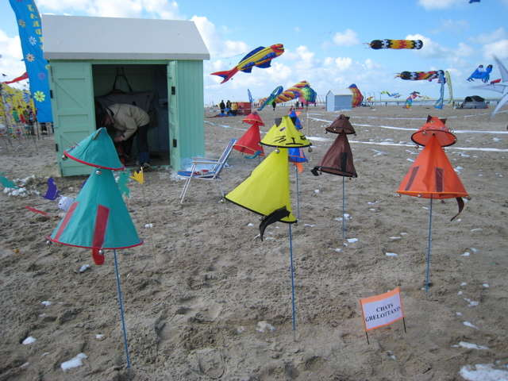
Les chats grelottants d'Emmanuel portent bien leur nom, avec les pieds dans la neige !

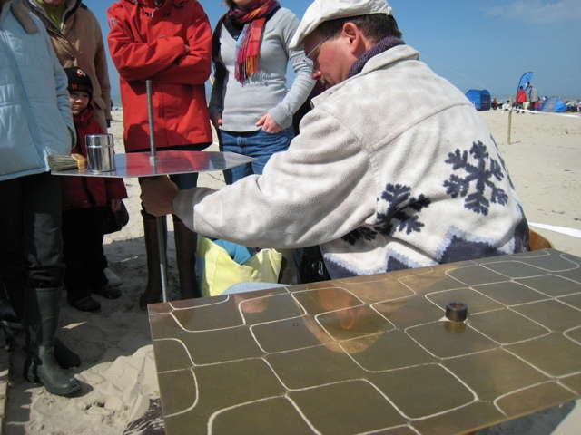
Ca se réchauffe, Uli Wahl a apporté 2 plaques vibrantes, sur lesquelles il marque les repères pour réaliser les arabesques désirées !

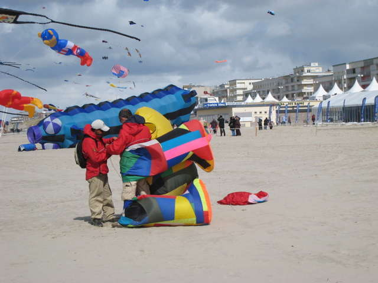
Les cervolistes se réveillent aussi, même si la mise en place n'est pas toujours facile...

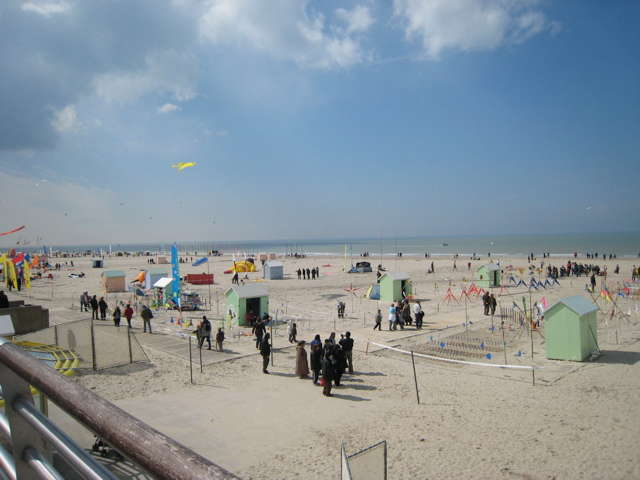
Du soleil ! Les JdVs se sont bien montés, les cerfs-volants sont encore un peu mous sur le matin...

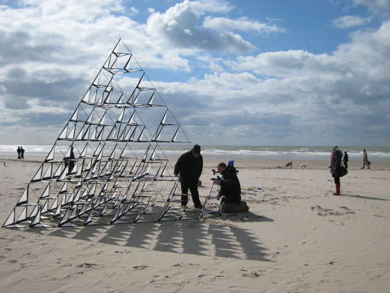
Vers l'hôpital, un superbe Bell est en voie d'achèvement ! Beaucoup de travail de fabrication et de montage sur le terrain...

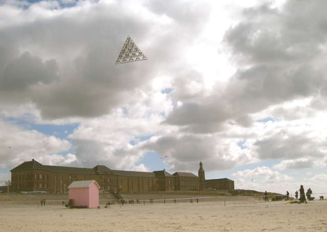
Mais le vol est hyper stable, avec toutes ces petites surfaces à fort dièdre et qui font entre elles une moyenne !

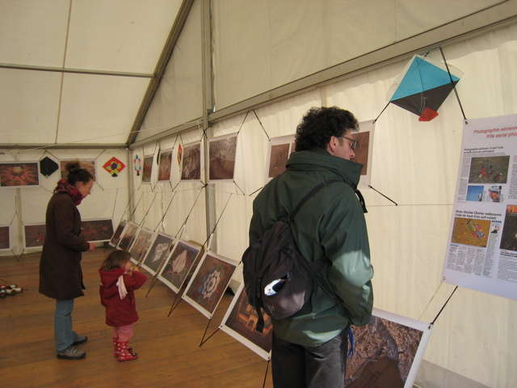
Sur la promenade, dans les tentes, expo photo de Nicolas Chorier qui a ramené des Indes de superbes aéro-photos, des éléphants, des temples, des rassemblements, de tout...

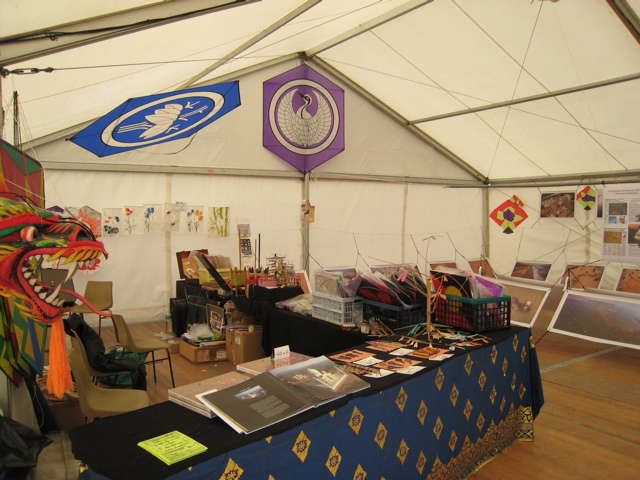
Ludo et Dom ont aussi leur stand orienté combattants, mais aussi petits cerfs-volants. Abdul est également présent, à Berck...

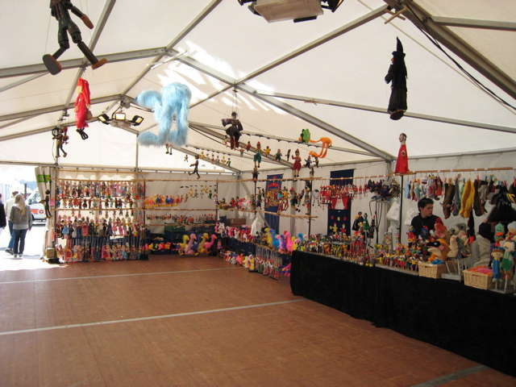
Dans une tente, un marchand de marionnettes en expose des centaines, l'embarras du choix !

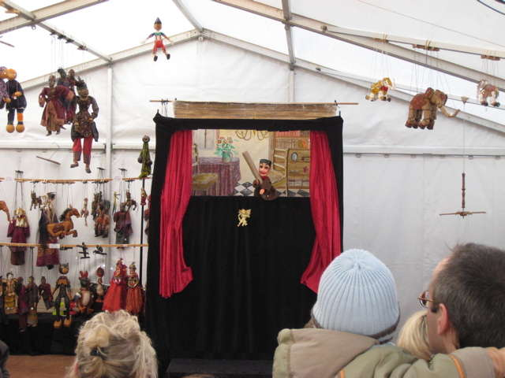
Mais il fait aussi de l'animation avec un Théâtre et Guignol qui rosse le méchant Arsenic !

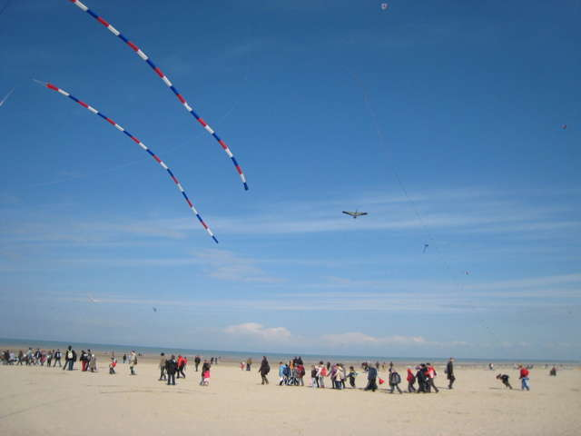
Le vent baisse et tout le monde se met en l'air. Je peux même faire voler ma grue encore très instable. Mais la régularité du vent me permettra de trouver enfin (3 mois que je cherche...) la bonne astuce pour la rendre stable !

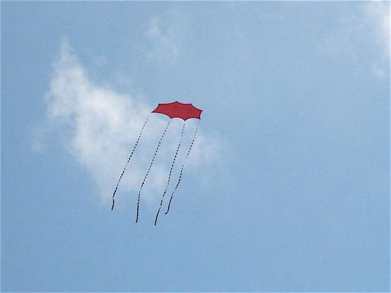
Un Faga très spécial, dont les coins arrières sont très étirés par une vergue. Comme quoi on peut toujours améliorer, ou au moins varier.

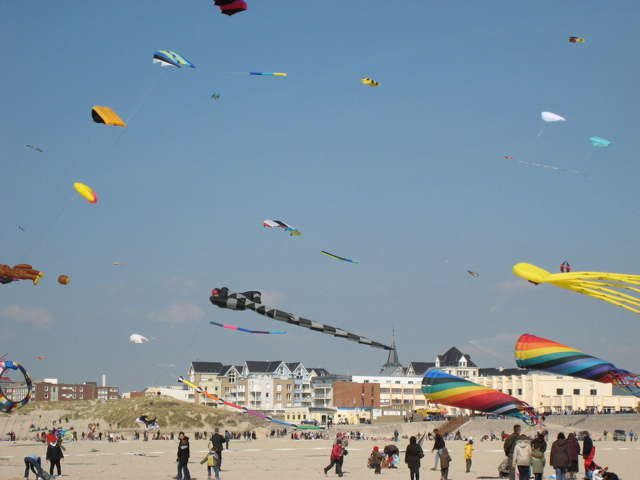
Vers le nord, quelques grandes pieuvres et raies. Sylvain montera aussi la sienne un peu plus tard...

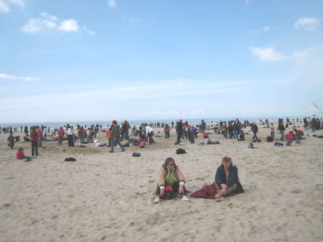
Comme le vent baisse, la température devient plus supportable, et bientôt, la plage est noire de baigneurs, enfin, de visiteurs...

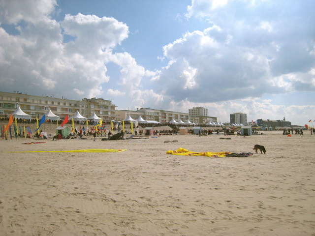
Evidemment, le vent faible est plutôt favorable à la prolifération des tapis de sol qu'à l'animation aérienne...

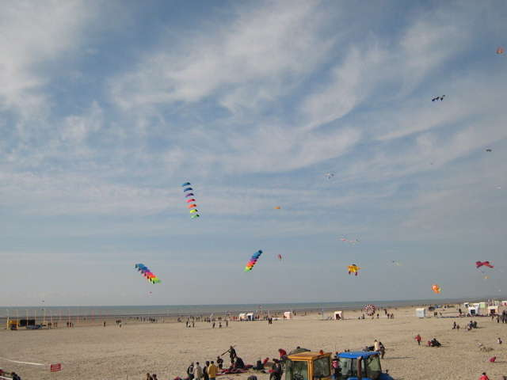
Dans la surface, le team Impossible en profite pour un show de trains de Flexifoils...

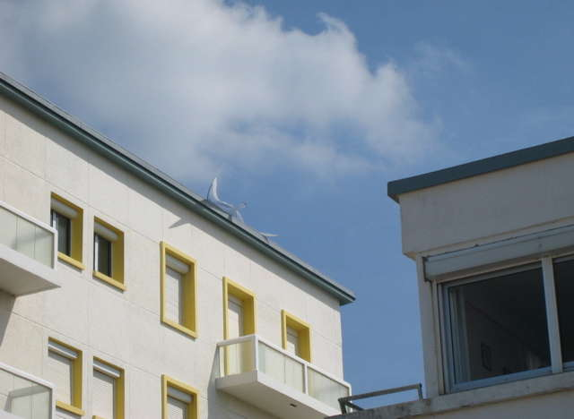
Petit vent, mon Goéland vole bien, mais j'ai oublié de monter les tendeurs de bout d'aile. Une turbulence et hop, sur le toit d'un immeuble. L'agence responsable ne veut pas donner les clés de peur qu'on n'abîme la toiture... Bon, on se débrouille sans eux...

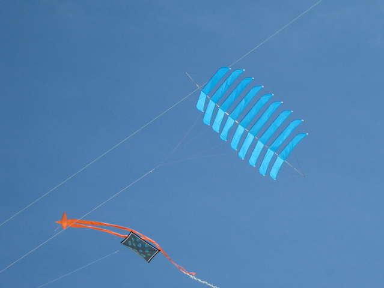
David Longbottom a créé (ou plutôt re-créé après un siècle) ce joli cerf-volant multi-surfaces qui vole très bien !

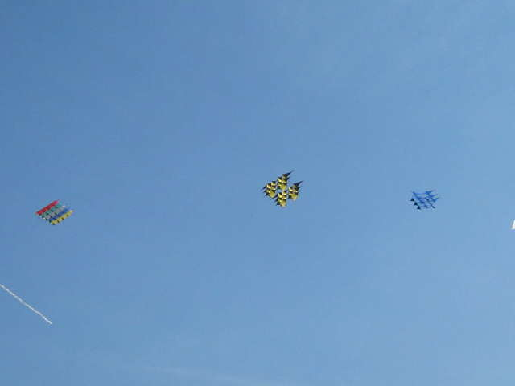
Karl, comme toujours a de splendides cellulaires très bien finis. Ils bougent un peu par vent fort, mais aujourd'hui, ça va...

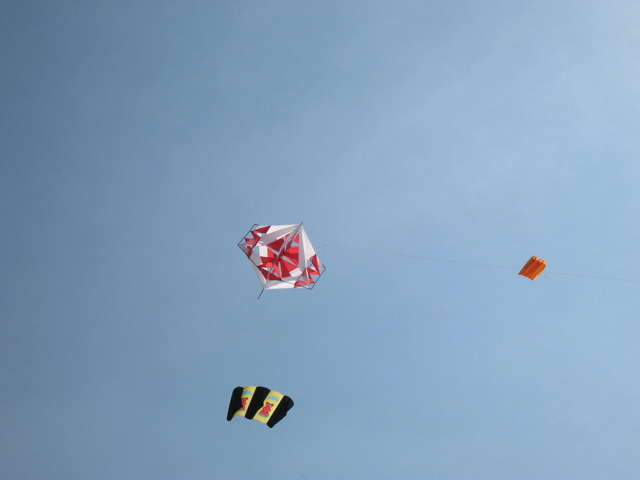
Un flocon, à armature externe (je trouve ça moins joli...) vole aussi de façon bien stable (ça, c'est pas toujours...), grâce à ses toiles bien tendues...

Au sol, une énorme chenille roule voluptueusement sur le sable, avec ses petites cornes rigolotes...

Un crabe amusant et pittoresque décore cette ligne. Il se tient très bien en pression, même ses yeux se dressent quasiment sans brides...

Olivier Reymond est venu, avec ses bannières et ses cerfs-volants décorés d'extraits de bandes dessinées. Voilà 2 de ses Rokkakus !

Et un de ses fagas... Cela représente bien des heures de couture en appliqué...

Jean-Claude a un succès fou avec ses découpes de bouteilles diverses et variées. Vous pouvez en faire autant, mais il faut des bouteilles, bien sûr, des outils (qu'il a souvent créés lui-même), un bon coup d'oeil, de l'imagination, de nombreux essais... et des qualités artistiques.

Deux Pyrodeltas plantés un peu près l'un de l'autre se sont lancés dans une valse, ou plutôt un combat fratricide...

C'est le jaune qui a gagné, tout content, il danse sur la dépouille de son adversaire...

Je fais revoler ma grue au-dessus de la promenade, maintenant qu'elle est stable. Des cumulus qui se sont développés très vite en cheminées lui font un cadre naturel...

Un cellulaire bizarre, cellules en croix à l'avant, en losanges classiques avec petites ailettes à l'arrière... Ca vole bien...

Chez les gros, l'escadron de pieuvres s'est augmenté d'un magnifique calmar aux gros yeux protubérants...

Sous une tente d'expo, un cerf-volant créé par Folon (vous savez, l'auteur des bonshommes volants qui ont servi de générique à une émission littéraire)...

Le Capitaine Pic a installé son bassin, ses soufflantes et ses voiliers ici, au grand plaisir des enfants qui s'inventent des jeux de croisière, comme passer entre les bouées mouillées au vent...

Il y a de plus en plus de CVs en l'air. Malheureusement de plus en plus de gonflables. Il faut reconnaître que les gonflables se montent et se démontent vite, et sont moins sujets aux accidents. Et s'ils tombent, il suffit de les remettre droits et ils repartent. Mais la commodité ne devrait pas être le seul critère de choix. Surtout si ce ne sont pas de vrais CVs mais seulement des ornements qui ont besoin de la corde d'un porteur...

Pendant que Karl et ses amis se sont installés comme tous les ans derrière leur paravent au coin Nord-Est de la surface, les Géants arrivent sur la promenade...

Mon Condor (6 m) vole, toujours bien merci, en compagnie d'une (relativement) petite mais charmante oie de David Longbottom...

Et ma grue est tellement stable que je peux l'abandonner un peu, et admirer son profil... Il faudra seulement que je re-courbe un peu le cou qui s'est détendu...

Sylvie Perry, accompagnée d'Arnold, fait voler ses créations, typiques de son style comme ce grand pyrodelta...

Ou cette espèce de Faga très ornementé...

Ou son petit delta obtus qui bat des ailes sans arrêt et secoue le cervoliste...

Gerhard, l'autrichien, a mis en l'air son Yakamaté, d'une stabilité exemplaire, une création de Christian Bécot orientée aérophoto. C'est un dérivé de Rokkaku double, avec un trou ovale qui laisse partir l'air du ventre central, et deux petites dérives à 45 ° à l'arrière...

Pendant ce temps, Joël monte et explique le parapluie qu'il a construit pour la rencontre Vulandra en Italie...

François Guzman a aussi construit le sien et ils volent de conserve...

J'ai aussi remarqué cette espèce d'avion biplan multi-surfaces que je n'ai pu bien détailler, mais qui volait bien...

Le soir commence à gagner à l'Ouest, mais les CVs sont toujours dehors, le temps est beau et le vent régulier...

Dans les CVs intéressants, il y a encore ce naja (et son jumeau plus loin), sorte de cerf-volant plat à longue traîne et géométriquement décoré....

Deux quasi-cerfs-volants : l'un un fantôme amusant et relativement simple, l'autre un dragon beaucoup plus complexe techniquement et artistiquement...

Plus simple, un bonhomme en pain d'épices ou en citrouille...

Enfin des trains où s'entassent des flow-forms, des raies, des serpents et diverses formes...

Pendant ce temps, les enfants s'amusent au parterre et construisent des châteaux sophistiqués...

Leurs oeuvres ne visent pas forcément des records de taille...

Pour celui-là, on a cherché la complication...

Là, manifestement, on s'est attaché à la profondeur des douves, avec juste un gros tas au milieu...

Le soir arrive, on se retrouve au parking, où la remorque de Jean-Marc constitue un comptoir idéal pour l'apéritif du jour et pour les parlottes qui l'accompagnent...

Dîner ensuite Au Gré du Vent, on y rencontre une demoiselle qui s'est fait maquiller artistiquement sur la promenade...

Nous sommes vendredi matin, les arrivées sont nombreuses... L'équipe Carpe Diem a dressé ce tipi plus original et artistique qu'utilitaire...

L'Ecole de Voile donne son cours de chars à voile sur la plage le matin. C'est bien plat, à marée basse, et bien lisse...

Les cerfs-volants montent progressivement, mais il y a encore beaucoup de vent. Les parasleds se défendent bien dans ces conditions...

Michel Darnis a apporté un gros déballage de Cacophones qui tintinnabulent de tous les côtés, avec des mécanismes simples mais plus ingénieux les uns que les autres...

Le voici, réfléchissant sans doute aux améliorations et aux suppléments à apporter à son oeuvre...

Le Centre Social de Berck a réalisé un semblant de Labyrinthe, mais c'est surtout pour faire flotter au vent les petits mots écrits par chaque enfant qui passe...

Sous un parasled, ces belles manches à air de tailles croissantes et de forme curieuse, comme des diabolos entassés...

Et encore un joli parasled, on en voit beaucoup aujourd'hui...

Un cerf-volant cellulaire de Karl qui souffre pas mal du vent et a bien envie de se coucher...

Déjeuner. Dans la queue, Peter Lynn est un peu inquiet pour ses monstres, qui tombent de temps en temps...

De retour à ma tente, le vent en a fait le tour et a déposé 50 kg de sable à l'intérieur. Finalement, le paravent de Karl n'est pas une mauvaise idée !

Sur la promenade, les géants se promènent, dansent, serrent la main des passants, enlacent les jeunes filles...

Vendredi, soirée de gala au Kursaal. Il y a de plus en plus de participants, les tables réduisent la piste de danse à une large allée...

A la table voisine, les Scratch Bunnies, un team du Championnat, a apporté plein de colifichets pour animer la fête : bulles de savon, ballons, figurines, oreilles... de Bunnies, évidemment !

Emmanuel a récupéré un cavalier pour son chat pendentif...

Gérard reçoit le Diplôme de Citoyen d'Honneur de la ville de Berck, il en est très fier : le dernier cervoliste à l'obtenir était André Cassagnes, qui a fait débuter Gérard au Bois de Vincennes...

Ensuite, ce sera la distribution des prix du Championnat du Monde...

Top, le buffet est ouvert. Il est décoré de cette chimère de paon, d'oie... et de saucisson de porc !

Les hommes sont quand même réservés, ce sont les filles qui se jettent aux premiers postes...

Encore d'autres filles qui ne manquent pas d'avantages... capillaires, pendant que les mecs attendent patiemment que ça se calme...

Philippe (des FLICs) a subi une tonte sévère, mais il a la tondeuse à la main, et il y aura d'autres victimes...

Renault y est passé aussi...

La tension monte dans la salle bien remplie, Gérard va lire le palmarès. Il commence par la fin, traîne un peu pour faire durer le suspense...

Finalement, explosion de joie chez le team japonais Air Rex ! ..

Les Bunnies sont un peu moins gais qu'au début, voire désespérés : ils ne sont que cinquièmes, ils devaient attendre mieux...

Pendant que le calme revient, Fabrice fait son show indoor comme tous les ans. Mais comme la place manque, il le fait sans lignes du tout !

Pour les spécialistes voici le classement complet avec les notes... Les Japonais ont vraiment une grosse avance, et les ch'tis Tatoueurs du Ciel m'ont surpris, l'année dernière, ils promettaient mieux !

Samedi matin, retour sur le terrain. Gérard Rosenblatt fait voler comme d'habitude des CVs parallélipipédiques surprenants mais bien décorés, et pas en plastique, cette fois...

Le Météo de Christian est scotché dans ce vent, grâce sans doute à ses ailes qui plient et flappent, mais portent peu...

Au sol, les JdVs ne souffrent pas trop. Patricia n'hésite pas à sortir ses moulinets de plastique léger...

Le défilé en ville a été reporté la semaine dernière pour cause météo. Mais cette fois, c'est parti, avec les bannières, et musique en tête...

En plus des Géants, il y a même les majorettes locales, attendrissantes en attendant de les voir grandir...

Dans la rue Carnot, commerçante et semi-piétonne, ça embouteille un peu...

Sur les terrains, les FLICs ont fait des émules, il y a de plus en plus de révos, j'en compte 25, qui exécutent des mégateams d'enfer. Gérard parle d'un Championnat des teams l'an prochain...

Originalité : cette marionnette suspendue à sa ligne et aux mouvements commandés via un triangle par un ou des aides en pied de retenue.

Inconvénient des grandes marionnettes : elles sont grandes ! Celle-ci a fini son service pour le moment...

Des musiciens ambulants sont venus de Lyon pour nous régaler, lors de notre dînette sous le barnum.

C'est tellement entraînant que tous les JdVistes (et assimilés...) se mettent à danser !

Le Charleston rend les dames folles ! Mais Jean-Claude a l'air d'en connaître un rayon...

Niekhol s'y met aussi, elle possède bien le sujet...

Et ces dames de l'Organisation s'y mettent aussi avec brio, c'est presque du niveau professionnel !

La nuit arrive, Peter Lynn a tout laissé en l'air, comment-se fait-ce ? Hé, bien sûr, c'est ce soir le vol de nuit !

Un grand nounours lumineux salue notre arrivée sur le terrain.

L'illumination est sans commune mesure avec les lumignons de l'an dernier, une vraie cathédrale de projecteurs troue le ciel au-dessus des cerfs-volants.

Et l'on voit voler effectivement le cerf-volant décoré par Folon. Il vole très bien, mais il vaudrait mieux ne pas couper cette pièce unique !

Les projecteurs sont nombreux et multicolores, avec beaucoup de projecteurs de poursuite, c'est parfait et féerique...

Il y a eu aussi un très beau feu d'artifice (celui qui n'avait pu être tiré au 15 août cause météo) avec de nombreux rebondissements...

Pendant ce temps, les cerfs-volants restent en l'air ! Et les jardiniers lancent courageusement des ballons à air chaud sous les retombées des fusées !

Dimanche matin, dernier jour hélas. Beau temps, le vent a baissé et est maintenant idéal. On retrouve avec plaisir (des yeux) le CV et sa retenue spectaculaire en forme de grande flamme rouge...

Les cabanons sont ouverts, les JdVs se remontent aussi.

Bruno a la même, mais il a aussi des bambous sonores trop longs qu'il doit ramener tous les soirs au camion !

Dans les JdVs, on ramasse plein de petites boules résidus du feu d'artifice. Mark les allume sans mollir dans une coupelle avec son super-briquet-chalumeau...

C'est bourré de magnésium, c'est presque dommage de les allumer de jour !

Et un dernier pot des Jardiniers ! Claude Bova est venu aujourd'hui, et son flair l'a amené là tout droit...

Les gens de Sens ont débarqué aussi, le Hérisson vole, ce n'est pas toujours le cas !

Ils ont aussi réalisé un nouveau monstre que je ne sais pas qualifier, disons un dragon...

Même l'Escargot décolle sans problème, avec divers autres engins, bol, pieuvre, trilobite, Nemo, etc. !

Un JdV léger et peu coûteux, mais bien construit, avec sans doute beaucoup de recherche de matériaux en amont...

A gauche un flow-form typique de Claude Lebourgeois, et plus haut, un modèle spécial : les poches centrales sont complètement ouvertes, les extérieures fermées...

Dernier repas au barnum, on fait la queue, il y a du monde. Mais on supporte bien, tous les cervolistes ne sont pas des costauds suants, rubiconds de coups de soleil, avec une barbe de 3 jours et le crâne aux deux tiers rasé !

Ce beau vol de ptérodactyles colorés et bien stables est une réussite.

Claude a sorti son Jimmy Hendricks en ornements violets et noirs comme beaucoup de ses productions.

Relié à Jimmy Hendricks, ce téléphone joue sa musique quand on le décroche ! Les coxs sont aussi de lui, les femelles sont très sexy...

Ce delta gonflable met en valeur sa deco digne d'un fumeur de hasch... Les Américains ont essayé de le copier (sa structure, pas son tissu...), mais ont voulu faire trop robuste et ça n'a pas marché...

Au loin, une étagère Lecornu, droite et non oblique me semble-t-il, mais je suis un peu loin pour l'assurer...

Et un cellulaire Pormorseff, découpé semble-t-il dans un transat, mais il vole parfaitement !

Les Gwenn-Ha-Du, Pirates et assimilés arrivent sur le terrain et plantent leurs bannières. Mais en Nasa, il y a aussi Renaud, Julie, et d'autres rouleurs de chars qui s'associent à l'idée...

En fait, ils feront une démo en team à la mémoire de Christian, qui s'est battu avec sourire et optimisme, mais qui a fini par poser sa toile...

Bon, la suite (et fin) : on a encore vu ce joli cellulaire, de la famille de celui de Joël, mais dans des couleurs différentes...

Dans ce vent de rêve, j'ai pu mettre en l'air Megoel qui s'est bien tenu, sous le Meteo de Bernard qui n'est pas monté plus haut que 200 m, circonstance rare...

In fine, Mark a monté sa roue-bol de 10 m pour clôturer en beauté ce festival de Berck 2008 ! Un jour, un gosse s'est pris dedans, et Mark a dû se brûler les mains pour le sauvetage !
Berck : Un festival hors du commun, qui a débuté sous des auspices moyens côté météo, avec de la neige abondante, mais qui s'est finalement mieux déroulé que la Météo Officielle ne le prévoyait ! Accueil bien organisé mais qui reste sympa, vol de nuit impeccable (un peu peu de cervolistes, qui auraient pu honorer un peu plus leurs hôtes, même remarque pour les jours de petit vent), et organisation sans faille, un super-festival qui mérite bien sa réputation !